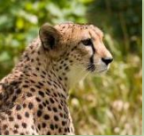

Animal Planet
Save Animals
What are Animals?
Animals are multicellular eukaryotic organisms that form the biological kingdom Animalia.
With few exceptions, animals consume organic material, breathe oxygen, are able to move, can reproduce sexually, and grow from a
hollow sphere of cells, the blastula, during embryonic development.
Over 1.5 million living animal species have been described—of which around 1 million are insects—but it has been estimated there are over
7 million animal species in total. Animals range in length from 8.5 millionths of a metre to 33.6 metres. They have complex interactions with each other and their environments,
forming intricate food webs. The kingdom Animalia includes humans, but in colloquial use the term animal often refers only to non-human animals.
The scientific study of animals is known as zoology.
In Africa, the Big Five game animals are the lion, leopard, rhinoceros, elephant, and Cape buffalo.
The term was coined by big-game hunters, and refers to the five most difficult animals in Africa to
hunt on foot, but is now also widely used by safari tour operators.
Different types of animals

Cheetah
The Cheetah is a large and powerful feline that was once found throughout Africa and Asia and even
in parts of Europe. It is found in only a few remote regions of its once vast natural range.

Mountain Lion
The mountain lion is a large, tan colored cat species native to North America,
Central America and South America.
In the United States, these cats live primarily in western states and Florida.

Bengal tiger
The Bengal tiger is a subspecies of tiger, found across the Indian subcontinent.
It is the national animal of Bangladesh and is considered to be the second largest tiger in the world.